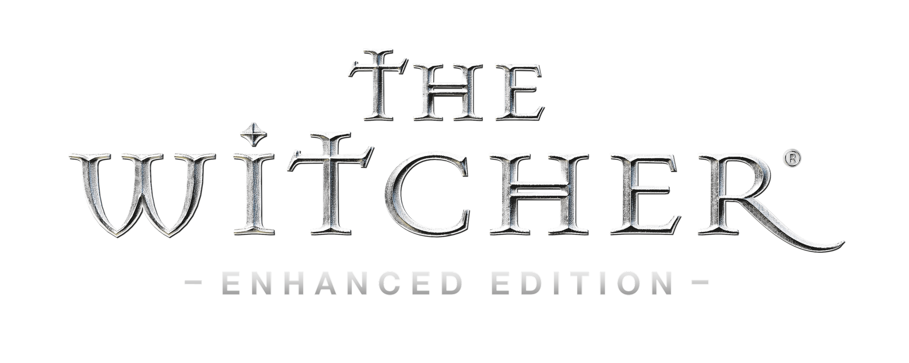
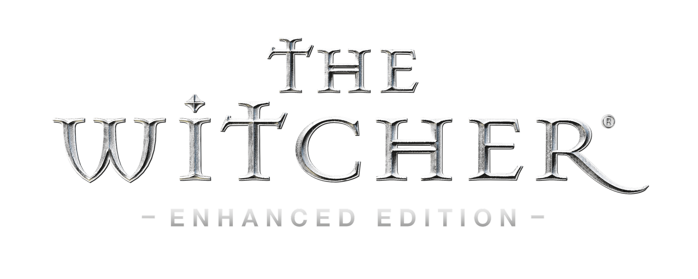
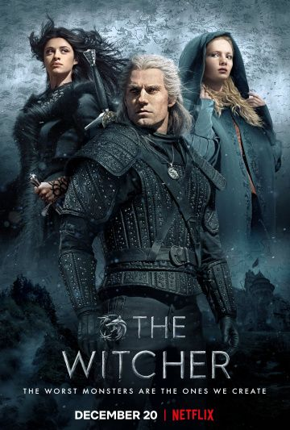

Вселенная Ведьмака созданная поляком паном Сапковским невероятно популярна и обросла огромным количеством дополнений, продолжений, фанфиков и даже имеет мега популярную компьютерную игру по мотивам книг. Чем же эта вселенная так привлекательна? Во-первых, ведьмак один из первых положительных героев в фэнтези, которому автор позволил иметь достаточное количество слабостей и недостатков, а не идеализированный книжный образ героя без страха и упрека. Геральт получился реальным, живым, этаким «своим парнем», которому не чуждо перебрать вина, увлечься женщиной, ухватится за выгодную, но не самую приятную работенку. При этом он остается по-классически для фэнтези благородным, смелым и преданным и, конечно, же сильным и обладающими определенными магическими способностями - полный набор качеств привлекающих читателей обоих полов. Главные женские персонажи - волшебница Йеннифэр и княжна Цирилла получились не менее яркими и запоминающимися, а уж детали, которыми наделил их автор (одни духи с запахом крыжовника и сирени чего стоят) породили множественные косплеи и реплики. Второе, что, несомненно, цепляет в цикле про Ведьмака это мир созданный Сапковским похожий на Средневековую Европу и при этом абсолютно особенный авторский, детально проработанный со своей историей, мифологией, географией, социальным устройством, бестиарием и системой магией.
